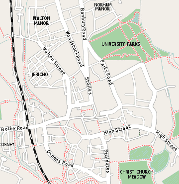
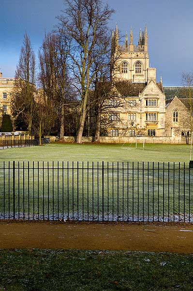
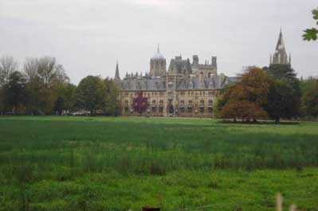

|
© 2021 Festival Art and Books. All rights reserved. Christchurch Meadows
This famout flood meadow is a popular walking and picnic spot in Oxford, and is also a place where JRR Tolkien and his friend CS Lewis used to go for walks. The meadows are overlooked by Merton College, where JRR Tolkien was the Rawlinson-Bosworth Professor, and indeed his window to the room he occupied can be seen from the meadows, so he had a good view of Christchurch Meadows when he worked at college. The walls that mark the edge of the Meadows around Addison’s Walk, were known by the Inklings and others of that time in Oxford as ‘The walls of Troy’. – presumably because they are solidly built and tall, almost like ramparts of a castle. The meadows are roughly triangular in shape and bounded by the River Thames, which as it passes through central Oxford is known as the Isis, the River Cherwell, and Christ Church College itself. . It provides access to many of the college boat houses which are on an island at the confluence of the two rivers. The lower sections of the meadow, close to the Thames, are grazed by cattle, while the upper sections have sports fields. Christchurch Meadow is owned by Christ Church College and is thus the private property of the college, however access is allowed during the day. Access starts very early to allow rowers to reach the boathouses. In past times, ornamental wooden barges were moored on the river here to store boats and house spectators. However these have all now been replaced by boathouses. What is less known is that James Sadler made the first ascent in a balloon by an Englishman from Christchurch Meadow on 4 October 1784. The balloon rose to a height of around 3,600 feet and landed six miles away near the village of Wood Eaton near Islip to the North-east of Oxford, and a plaque notes the event. It is fitting that the balloon descended there, as nearby at Weston on the Green parachute training is carried out by the RAF, usually from fixed balloons. The Meadow was also the location where the medieval royal pretender, John Deydras, claimed to have been persuaded by the devil to impersonate Edward the Second in 1318. Postwar development planned for central Oxford included a relief road that would have cut right through Christchurch meadow and joining the district of St. Ebbes. There was a proposal of a tunnel being driven right under the river to accomplish this as a kind of inner ring road. The whole project was defeated after vigorous opposition – which Tolkien himself was very sympathetic with, not wishing to see more of his beloved Oxford fall prey to the motor car than was needed..
 Location of Christ Church Meadow within central Oxford |
  |